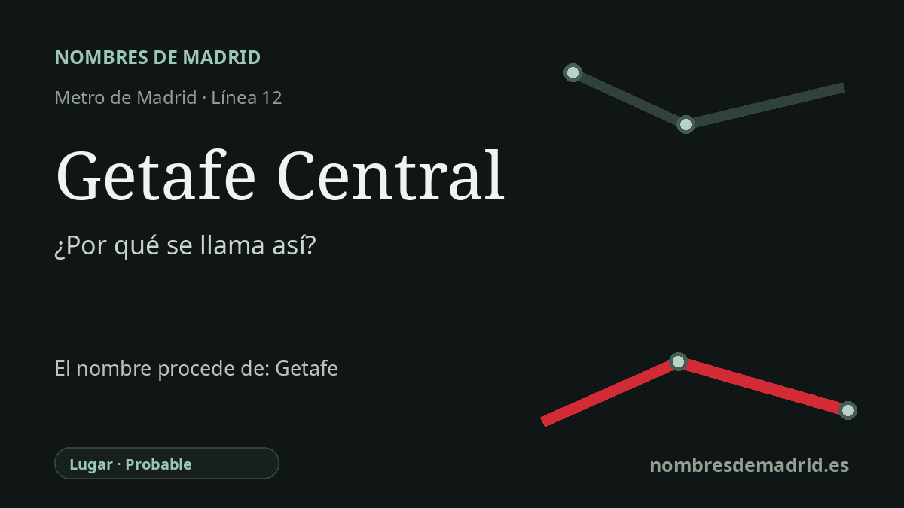

Publicado el · Investigación de Nombres de Madrid · Cómo verificamos cada origen · 6 fuentes consultadas
Respuesta rápida
Getafe Central debe su nombre a su función como intercambiador central de MetroSur y Cercanías en Getafe. El topónimo Getafe probablemente procede de formas medievales como Xetafe/Xatafi, pero la explicación popular árabe de la 'calle larga' no está demostrada.
La historia del nombre
Getafe Central debe su nombre a Getafe, el municipio al que sirve, y a su posición central dentro de la red de transporte local. La estación se abrió con MetroSur, la línea 12 de Metro de Madrid, el 11 de abril de 2003. Además enlaza con la estación de Cercanías conocida como Getafe Centro, por lo que el nombre funciona como una descripción práctica de un intercambiador central, no como una dedicatoria personal.
El nombre antiguo que hay detrás de la estación es el topónimo Getafe. Los relatos municipales y locales lo relacionan con formas medievales como Xatafi, Satafi o Xetafe, y con el poblamiento que creció junto al camino real entre Madrid y Toledo. Según esa tradición, la localidad se formó cuando habitantes de Alarnes y de otros asentamientos cercanos se trasladaron a un lugar más sano junto al camino.
El mejor testimonio temprano de la explicación tradicional aparece en las Relaciones Histórico-Geográficas mandadas hacer por Felipe II. En la respuesta de Getafe, vinculada al interrogatorio de 1575 y transmitida como relación local de 1576, los informantes dijeron que no sabían la cuestión con certeza, pero que habían oído que en árabe jata significaba una cosa larga y que el nombre aludía a las casas extendidas a lo largo del camino. Es una prueba importante de la tradición, no una demostración de que la etimología árabe sea lingüísticamente correcta.
La cautela toponímica moderna es importante en este caso. Jairo J. García Sánchez, en el Centro Virtual Cervantes, afirma que Getafe plantea muchos problemas etimológicos: se presume un origen árabe por su aspecto y configuración, pero la documentación medieval no permite por ahora ir más allá. Por eso Getafe Central tiene un origen claro como nombre de estación, pero se apoya en una historia toponímica más compleja.
También hay un matiz ferroviario. La página de Renfe indica que la antigua estación, perteneciente a la línea Madrid-Ciudad Real, mantuvo el nombre Getafe-Badajoz hasta la creación de Cercanías Madrid; el edificio actual se abrió el mismo día que la línea 12. La interpretación mejor respaldada es esta: la estación se llama así por el Getafe central, mientras que la explicación árabe popular de la 'calle larga' es tradicional pero incierta.